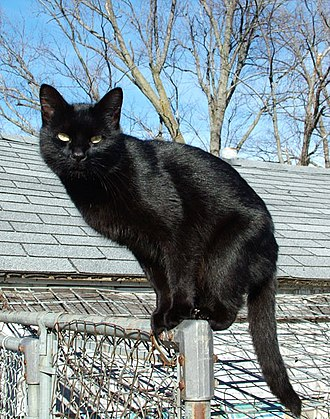

The Black Cat
Here comes our Super Arch nemesis . The black cat. The major super power of the black cats are , it the sign of death and bad luck because of their black fur just like ravens and crows. Fast-forward thousands of years – how did this fear translate over to a specifically colored domestic cat? It is believed that this superstition began around the Middle Ages in Europe. A folklore spread about a man and his son who came across a black cat, which they began to toss rocks at. The injured cat ran into a woman’s house who was suspected of being a witch and when the woman happened to appear limping and bruised the next day, people suspected that the cat must be the woman in disguise.
Directions to the Lair of the Black Cat
- Take US-71 S to I-229 S in Jefferson Township
- Head west on W 11th St toward N College
- Head west on W 11th St toward N College Dr
- Continue onto University Dr
- Continue onto University Dr
- Continue onto US-71 S
- Follow I-229 S to US-59 S/S 6th St in Saint Joseph. Take exit 4A from I-229 S
- Get on US-75 S in Soldier from KS-4 W
- Follow I-70 W to Co Hwy 109/Co Rd 31 in Lincoln County. Take exit 371 from I-70 W
- Merge onto US-59 S/S 6th St
- Slight right onto US-59 S/Lake Ave
- Turn right to stay on US-59 S
- Continue straight onto KS-4 W
- At the traffic circle, take the 3rd exit onto the US-75 S ramp to Topeka
- Take Old Hwy 24 to your destination

Back to Main Page